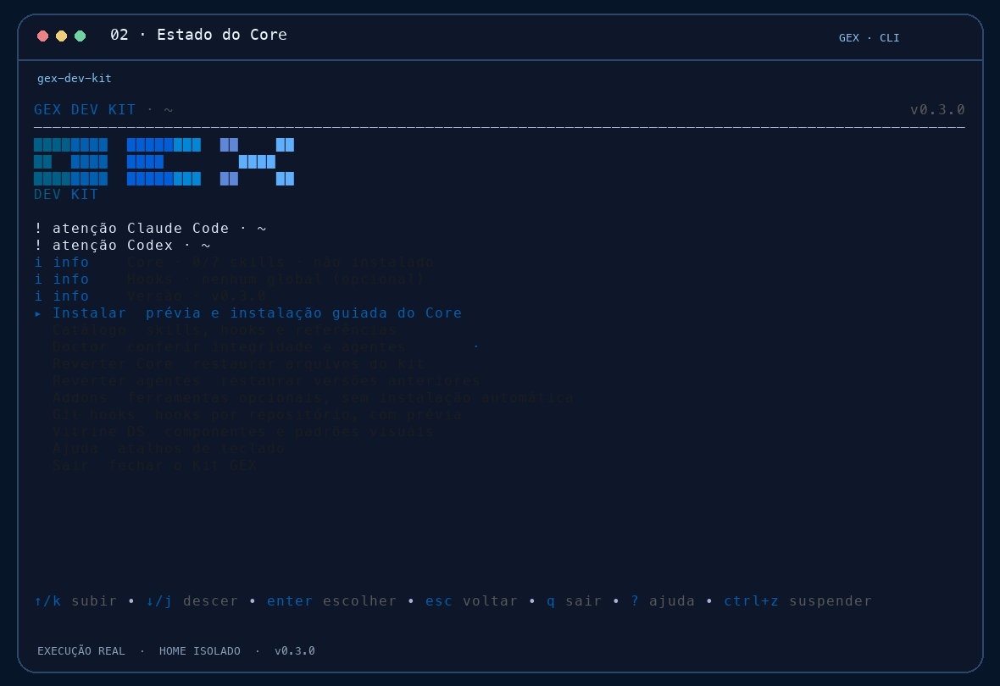
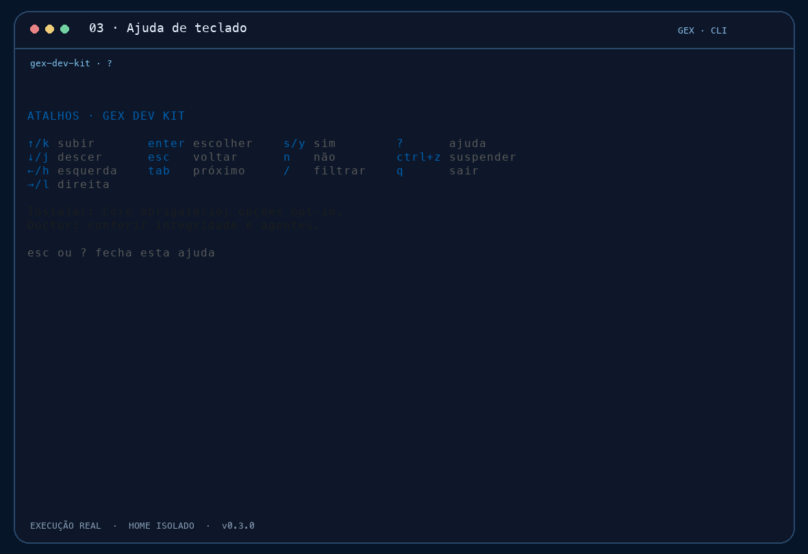
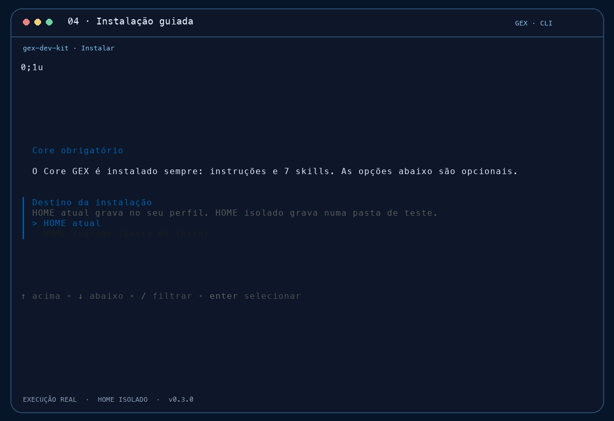
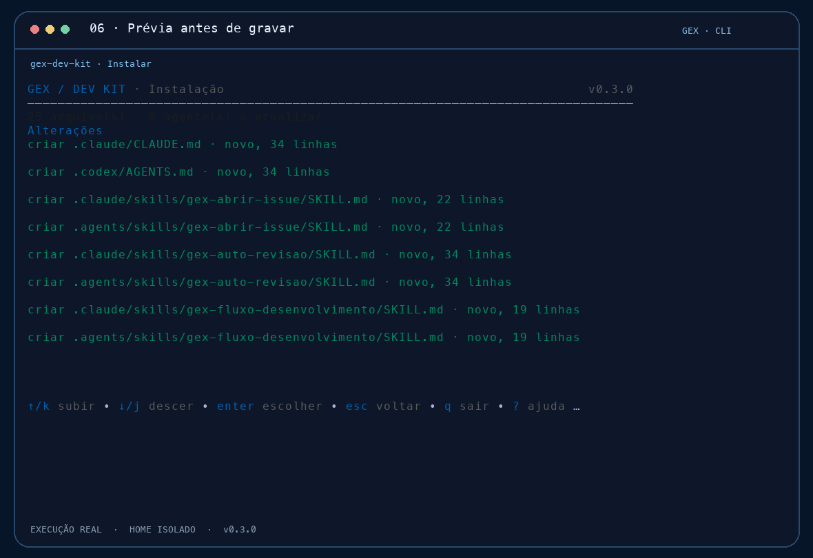
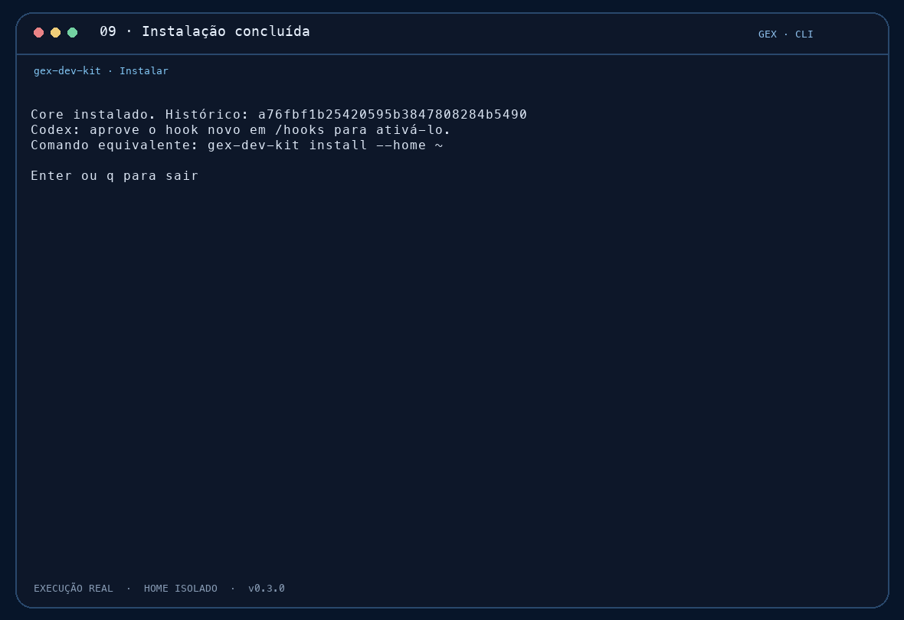
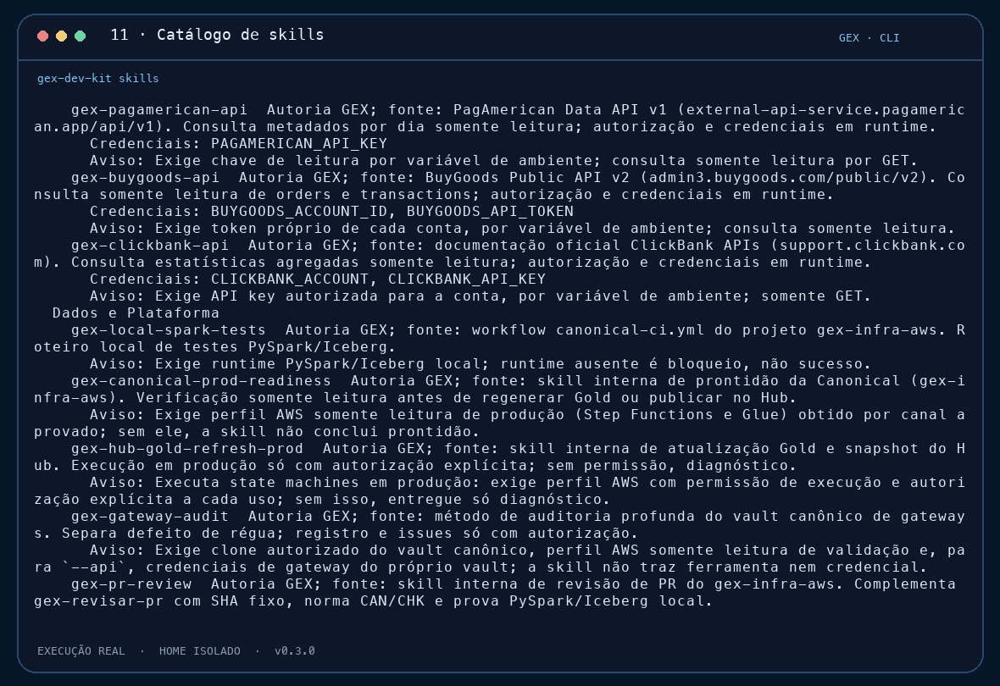
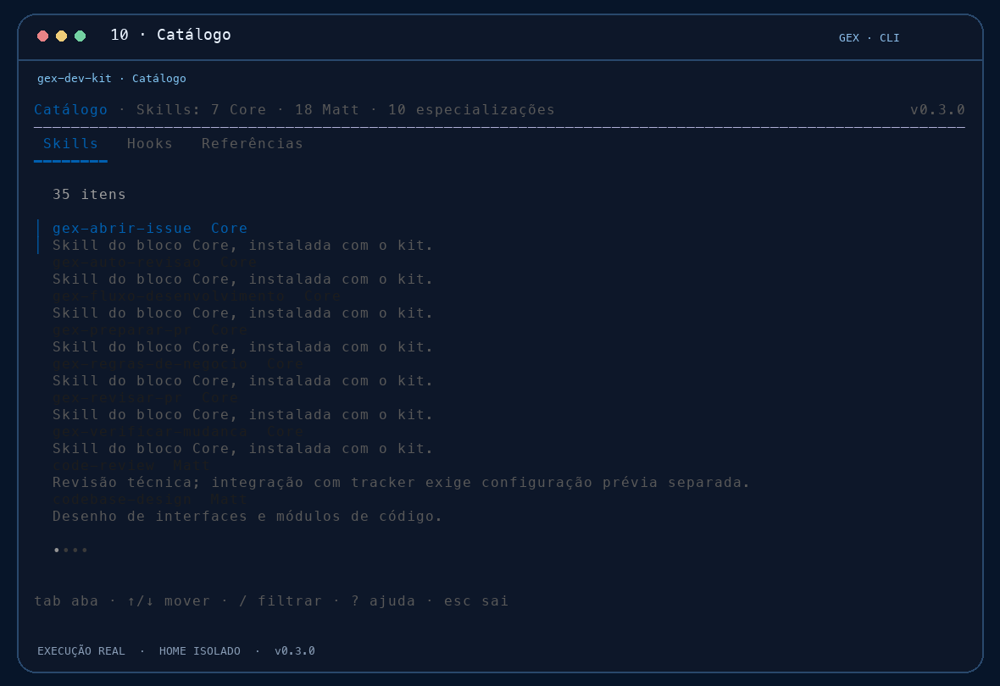
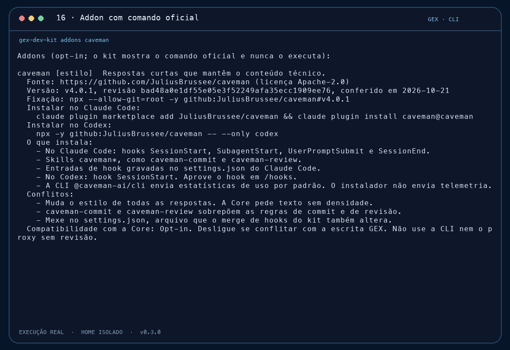
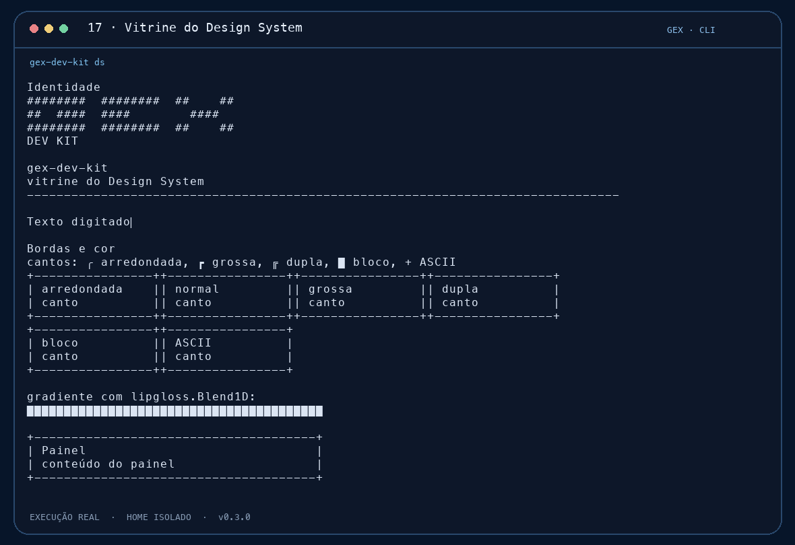

O que é o kit
Um instalador guiado para as skills e os hooks do Claude Code e do Codex.

Abra a CLI
O menu mostra o estado do Core e dos agentes.
EXECUÇÃO REAL · HOME ISOLADO
Veja o estado
Core, hooks e versão aparecem antes de qualquer ação.
EXECUÇÃO REAL · HOME ISOLADO
Peça ajuda
A tecla ? lista os atalhos.

Escolha em etapas
Core obrigatório. Depois, skills e hooks por grupo.
EXECUÇÃO REAL · HOME ISOLADO
Veja a prévia
Cada arquivo novo aparece na lista antes da gravação.
EXECUÇÃO REAL · HOME ISOLADO
Confirme
Nada é gravado sem a sua confirmação.
EXECUÇÃO REAL · HOME ISOLADO
Grava em etapas
A tela mostra cada etapa da gravação.
EXECUÇÃO REAL · HOME ISOLADO
Fim com histórico
A instalação ganha um histórico, usado pelo rollback.
EXECUÇÃO REAL · HOME ISOLADO
Liste as skills
skills mostra o catálogo sem abrir a tela.

Instale com --yes
A prévia continua aparecendo antes de gravar.
EXECUÇÃO REAL · HOME ISOLADO
Saída em JSON
doctor --json para scripts e CI.

Rode o doctor
Confere os arquivos gravados e o estado dos agentes.
EXECUÇÃO REAL · HOME ISOLADO
Reverta
rollback mostra a prévia e restaura o estado anterior.

Explore o catálogo
Skills, hooks e referências em uma lista.
EXECUÇÃO REAL · HOME ISOLADO
Addons
O kit mostra o comando oficial e não o executa.
EXECUÇÃO REAL · HOME ISOLADO
Vitrine
Componentes e padrões visuais para referência.
EXECUÇÃO REAL · HOME ISOLADO
Prévia por repositório
Os git hooks só são gravados com --repo e confirmação.
O que o kit faz
- Mostra a prévia antes de gravar qualquer arquivo.
- Grava somente depois de confirmação.
- Guarda histórico e permite reverter.
- Pede aprovação do Codex em /hooks antes de ativar um hook.